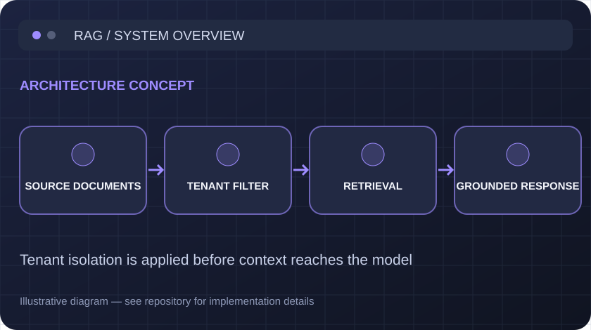

01 · RETRIEVAL & SECURITY
Secure knowledge retrieval, built around isolation.
A multi-tenant RAG service combining vector and keyword retrieval, with citations and explicit tenant boundaries. The repository includes repeatable retrieval evaluations, benchmarks and design decisions.
Key design decision → enforce tenant scope in retrieval, not in the prompt.
SYS / 001 RETRIEVAL

TENANT ISOLATION // ENABLED